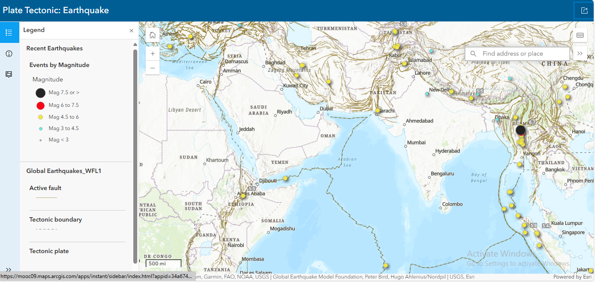

Projects
Watershed Boundary Mapping (California, USA)
This is my first GIS project where I mapped the Navarro watershed boundary and generated streamlines using ArcGIS Pro. It helped me understand basic hydrological mapping and topographic referencing.

Global Earthquake & Tectonic Boundaries Map
Interactive web map showing recent earthquakes near tectonic plate boundaries, built with ArcGIS Instant Apps.
Rural Public Services Monitoring Survey
This survey is designed to collect vital data on the availability, condition, and quality of public services in rural villages. It enables real-time, location-based monitoring of essential infrastructure such as electricity, water supply, public sanitation, and schools. This Survey is created with the help of ArcGIS Survey123.

Skills
ArcGIS Pro
QGIS
Python
Google Spreadsheet
Basic Cartography
Map Visualization
Contact
Email: gis.suhail.in@gmail.com
GitHub: @Suhail-GIS
Instagram: @jamaldavis85
Location: Khajurahat, Ayodhya, India